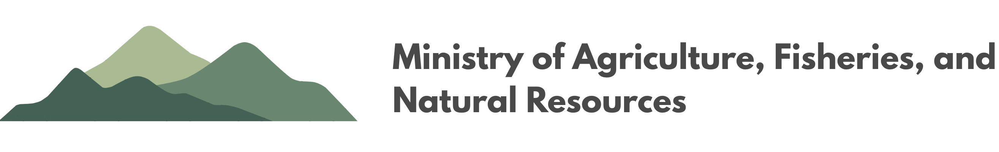

Square Country Government
Supporting a productive agricultural sector, sustainable fisheries, responsible natural resource management, and the long-term prosperity of Square Country.
Apply and renew permits.
Information on agriculture and sustainable farming.
Commercial and recreational information.
Forestry, mining, and land management.
Access the ministry's most frequently used online services.
Information for farmers, growers, producers, and agricultural businesses.
Licences, quotas, sustainable fisheries management and marine resources.
Protecting forests, waterways, biodiversity and public lands.